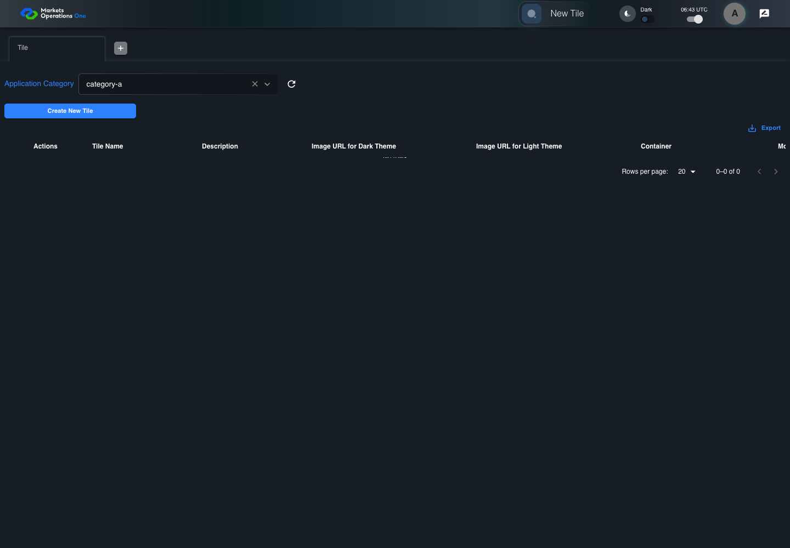
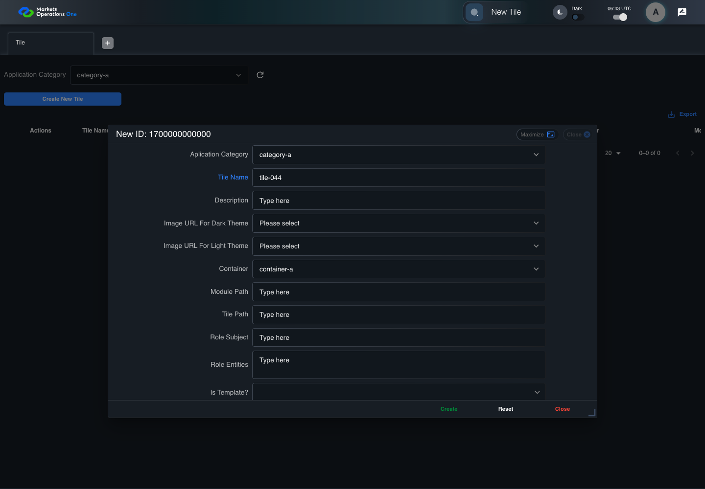
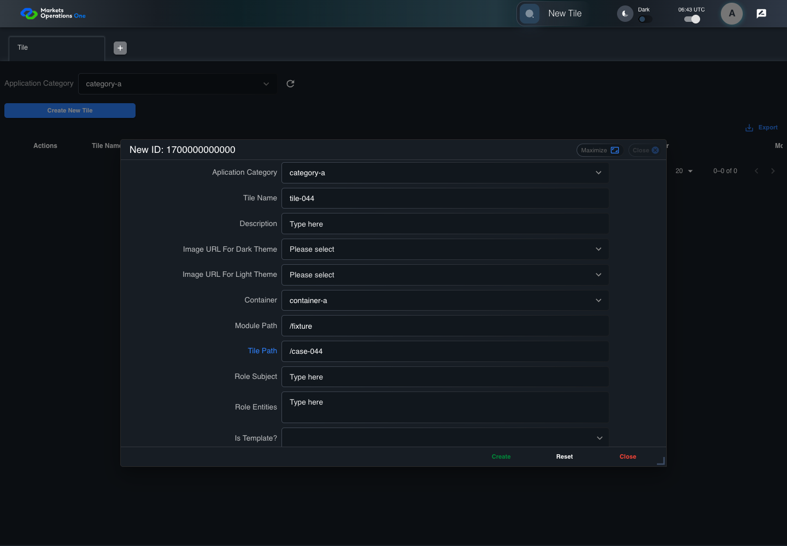
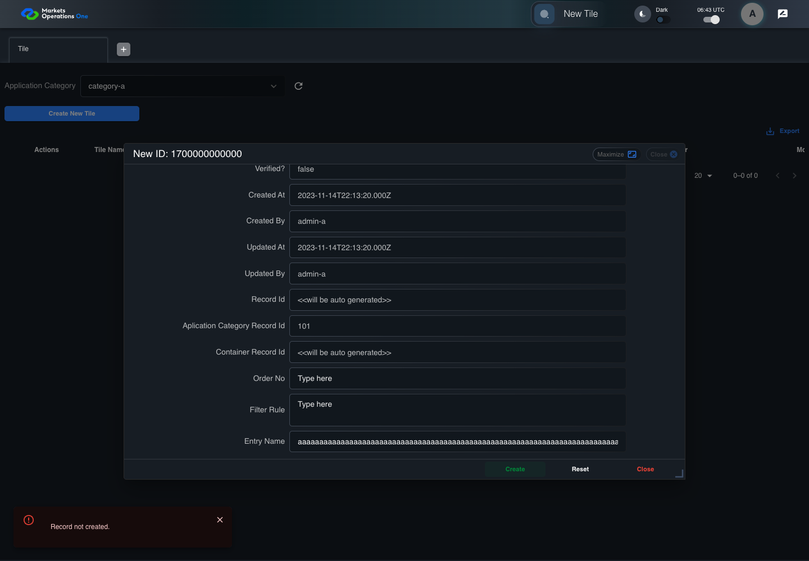

BFF-ADM-044 current BFF administration through actual UI
PASS · application/run-072/bff-adm-044-current-bff-administration-through-actual-ui-741f730e8a4b-attempt-1 · ACTUAL_APPLICATION_LOCAL_SERVICES
Actual current React and exact-current BFF admin controllers/services/JPA with actual migration DDL in disposable PostgreSQL. Controlled OUD/EMS2 identities and local Spring bootstrap. Fixture SQL seeds/mutates isolated records; service errors are actual database errors. Undefined agreed messages remain unresolved acceptance.
2026-10-22T06:43:23.450Z to 2026-10-22T06:43:31.894Z
Assertions and result · Artifact manifest · Exact run inputs and source hashes
Result SHA-256:2ab2c20c3e78c19e22266b7416ac139d09b355b799025bdedf4b86444278353eMachine observations
- actual-identity-projection.json
570bf3cc28a02ee157f84dae21bee2204514e64c0500f22dd7049638faa45f28 - actual-migration-schema.json
759a4a4d634a487a78b41552c34af0d61768fdbee307550b1c0f737add842fe1 - baseline-inputs.json
2fb7b6034bd2820b6541a89217af39d2356a91c016ec96971e7ff05284c0bc3a - bff-boundary.json
2788c4ab8939a2e6a4b8058824e5ad72620d8349d770b451f41925bd18ad3e45 - committed-ui-submission-comparisons.json
a686ad8b965adb7bbcacbc1a3ac09ba1217de7b6638e3ac6cc3107797b65ea34 - creation-clock.json
4aeddd8ead85f86c74467d99ab40d3ec45792dc0c035e575cf9ceee65516fa6d - empty-filter-rule-representation.json
96600316178d5b5e8941beb7739fe8152b183599335fda2bc4066961331b4893 - fixture-step-10.json
11e36276d9014cd6defbb07fdd70b6d438c7c383e0a4fea73eb643b95f33abbd - fixture-step-11.json
14565586b8359dbd45980f24ce7af10ab0ea897ee623727c2e05582d0575845f - fixture-step-6.json
3e00404199714e7f7d085441660d33231d2dfd02076c0fead8257bd524e5054f - fixture-step-7.json
79a22629f4f89115b833110e6bdc2c556542d98e402e30287351bdf84b37cf64 - fixture-step-8.json
38f52343866041f7d8682a9c557ac308c4a7e42d37959b8ffdf91700b6f86358 - fixture-step-9.json
439f14791358c66247414f3f33fe5993bcd55c8401923de1fc8678a3c92b36a6 - initial-persisted-records.json
ec8e31466205505e0aad359027cd8bb3fcb528bee887e8570cd39f60a16d75f7 - persisted-after-submit.json
36db9a1fddc1c32840e63fb4034c541eb34948377108a2d754ef0de24196a54a - reference-snapshot-3.json
e3df6faa48ff8a406b8d682383c60620abf29b5698f7bb4b7780116842f39c4c - reference-snapshot-4.json
45ee38c76ddb2c618a57c749255ddc74510b746bea971320ecfe19929895fc2c - ui-origin-bff-requests.json
a30ad43f740a96eaaf39e2e15b18387494a1f924710ed91286f4c18797b05090
Screenshot capture: CAPTURED. Named frames: 26.
Step screenshot evidence: COMPLETE. 25/25 canonical steps have execution screenshots.
Canonical step timeline
Given Admin A uses subject "admin-a" with role "FMO_ADMIN" in an isolated authenticated browser
Execution: PASSED.
1. step-01 Visible state after step 1: Given Admin A uses subject "admin-a" with role "FMO_ADMIN" in an isolated authenticated browser
2026-10-22T06:43:26.285Z · 1440×1000
Step: /Users/lushevol/code/github/ratan-release-impact/workbench/tasks/ui-test-coverage-20261022/test-cases.md:16582
SHA-256:dfdc4d9f87a154c4ae46684579c40a6bd70acad870e9b4d0e2d80afa36fd4e6cAnd the controlled Tile fixture records the initial grid rows and persisted values
Execution: PASSED.
2. step-02 Visible state after step 2: And the controlled Tile fixture records the initial grid rows and persisted values
2026-10-22T06:43:26.421Z · 1440×1000
Step: /Users/lushevol/code/github/ratan-release-impact/workbench/tasks/ui-test-coverage-20261022/test-cases.md:16583
SHA-256:5fea6524825cb12fe898c7a82a100ec1bf216016ff848d7bbd02127981d9c5d7And Category 101 has label "category-a" and Import Map 201 has Module Name "container-a"
Execution: PASSED.
3. step-03 Visible state after step 3: And Category 101 has label "category-a" and Import Map 201 has Module Name "container-a"
2026-10-22T06:43:26.472Z · 1440×1000
Step: /Users/lushevol/code/github/ratan-release-impact/workbench/tasks/ui-test-coverage-20261022/test-cases.md:16584
SHA-256:feab2e28aaf87d2ba40315b11ddb560b8914f565bf5aabd61984e60e8224458aAnd both references belong to "FMO_ADMIN" and the Tile page category filter value is Category 101
Execution: PASSED.
4. step-04 Visible state after step 4: And both references belong to "FMO_ADMIN" and the Tile page category filter value is Category 101
2026-10-22T06:43:26.519Z · 1440×1000
Step: /Users/lushevol/code/github/ratan-release-impact/workbench/tasks/ui-test-coverage-20261022/test-cases.md:16585
SHA-256:175fe539e6185b8c5cdb73c65f80a1c70718919fe475aeba9f3c45c45bef3a95And the controlled creation clock returns 1700000000000 milliseconds
Execution: PASSED.
5. step-05 Visible state after step 5: And the controlled creation clock returns 1700000000000 milliseconds
2026-10-22T06:43:26.552Z · 1440×1000
Step: /Users/lushevol/code/github/ratan-release-impact/workbench/tasks/ui-test-coverage-20261022/test-cases.md:16586
SHA-256:7c9c17d649d7178d70791dad9956a9d37a861ca6d5b90fafb47659d2f38c9b2cAnd the baseline fixture data defines "Tile Name" as "tile-044"
Execution: PASSED.
6. step-06 Visible state after step 6: And the baseline fixture data defines "Tile Name" as "tile-044"
2026-10-22T06:43:26.602Z · 1440×1000
Step: /Users/lushevol/code/github/ratan-release-impact/workbench/tasks/ui-test-coverage-20261022/test-cases.md:16587
SHA-256:7c9c17d649d7178d70791dad9956a9d37a861ca6d5b90fafb47659d2f38c9b2cAnd the baseline fixture data defines "Module Path" as "/fixture"
Execution: PASSED.
7. step-07 Visible state after step 7: And the baseline fixture data defines "Module Path" as "/fixture"
2026-10-22T06:43:26.635Z · 1440×1000
Step: /Users/lushevol/code/github/ratan-release-impact/workbench/tasks/ui-test-coverage-20261022/test-cases.md:16588
SHA-256:fcdf481d1e897dbdfd3114bceb58d9a63d7a467ecb9be62a989cffef4be10f30And the baseline fixture data defines "Tile Path" as "/case-044"
Execution: PASSED.
8. step-08 Visible state after step 8: And the baseline fixture data defines "Tile Path" as "/case-044"
2026-10-22T06:43:26.669Z · 1440×1000
Step: /Users/lushevol/code/github/ratan-release-impact/workbench/tasks/ui-test-coverage-20261022/test-cases.md:16589
SHA-256:fcdf481d1e897dbdfd3114bceb58d9a63d7a467ecb9be62a989cffef4be10f30And the baseline fixture data defines "Role Entities" as "E-TRADE"
Execution: PASSED.9. step-09 Visible state after step 9: And the baseline fixture data defines "Role Entities" as "E-TRADE"
2026-10-22T06:43:26.702Z · 1440×1000
Step: /Users/lushevol/code/github/ratan-release-impact/workbench/tasks/ui-test-coverage-20261022/test-cases.md:16590
SHA-256:b63bad2c3b152793bb52080c4d159f322c8e50f143b7c1c55ee21e79fdeca9cdAnd the baseline fixture data defines "Filter Rule" as ""
Execution: PASSED.
10. step-10 Visible state after step 10: And the baseline fixture data defines "Filter Rule" as ""
2026-10-22T06:43:26.756Z · 1440×1000
Step: /Users/lushevol/code/github/ratan-release-impact/workbench/tasks/ui-test-coverage-20261022/test-cases.md:16591
SHA-256:4df340404ed6f9092d29c9d6680437d2a054e04705263024b28a8bdac9c68485And the baseline Tile references use "Aplication Category" "category-a" and "Container" "container-a"
Execution: PASSED.11. step-11 Visible state after step 11: And the baseline Tile references use "Aplication Category" "category-a" and "Container" "container-a"
2026-10-22T06:43:26.802Z · 1440×1000
Step: /Users/lushevol/code/github/ratan-release-impact/workbench/tasks/ui-test-coverage-20261022/test-cases.md:16592
SHA-256:89690475654f20f037d8fe3ace42553097d352cdc8c8aa4208528000315d498dAnd the prepared database uses the inspected migration DDL and reports its applied schema revision
Execution: PASSED.12. step-12 Visible state after step 12: And the prepared database uses the inspected migration DDL and reports its applied schema revision
2026-10-22T06:43:26.852Z · 1440×1000
Step: /Users/lushevol/code/github/ratan-release-impact/workbench/tasks/ui-test-coverage-20261022/test-cases.md:16593
SHA-256:c715773ff3181223a90a92d361cb9618b0cb8ddc8b279cbee165844778f93be6When Admin A clicks the button labeled "Create New Tile" on the Tile administration page
Execution: PASSED.13. step-13 Visible state after step 13: When Admin A clicks the button labeled "Create New Tile" on the Tile administration page
2026-10-22T06:43:27.097Z · 1440×1000
Step: /Users/lushevol/code/github/ratan-release-impact/workbench/tasks/ui-test-coverage-20261022/test-cases.md:16594
SHA-256:845ea71c7765a685a4c28f6a0eb398bbaafb610a7d1623398e9aca2b668d67a9Then the dialog titled "new ID: 1700000000000" is visible on the Tile administration page
Execution: PASSED.14. step-14 Visible state after step 14: Then the dialog titled "new ID: 1700000000000" is visible on the Tile administration page
2026-10-22T06:43:27.159Z · 1440×1000
Step: /Users/lushevol/code/github/ratan-release-impact/workbench/tasks/ui-test-coverage-20261022/test-cases.md:16595
SHA-256:f294ba50d534112fe2072f34a8b4a08e3bcdb9253e167df00bb21505e555e535When Admin A clicks the combobox labeled "Container" in dialog "new ID: 1700000000000"
Execution: PASSED.
15. step-15 Visible state after step 15: When Admin A clicks the combobox labeled "Container" in dialog "new ID: 1700000000000"
2026-10-22T06:43:27.503Z · 1440×1000
Step: /Users/lushevol/code/github/ratan-release-impact/workbench/tasks/ui-test-coverage-20261022/test-cases.md:16596
SHA-256:59f74529704a57c4105b137083d0b7ee7bc5eea53858c1f6f445f5bc0052a353And Admin A clicks the option labeled "container-a" in the expanded "Container" listbox for dialog "new ID: 1700000000000"
Execution: PASSED.
16. step-16 Visible state after step 16: And Admin A clicks the option labeled "container-a" in the expanded "Container" listbox for dialog "new ID: 1700000000000"
2026-10-22T06:43:28.215Z · 1440×1000
Step: /Users/lushevol/code/github/ratan-release-impact/workbench/tasks/ui-test-coverage-20261022/test-cases.md:16597
SHA-256:67bd6ba94c258185007e8ace01525a3a47fca56c992338dd0edf75053505dbb4And Admin A fills the textbox labeled "Tile Name" with "tile-044" in dialog "new ID: 1700000000000"
Execution: PASSED.
17. step-17 Visible state after step 17: And Admin A fills the textbox labeled "Tile Name" with "tile-044" in dialog "new ID: 1700000000000"
2026-10-22T06:43:28.650Z · 1440×1000
Step: /Users/lushevol/code/github/ratan-release-impact/workbench/tasks/ui-test-coverage-20261022/test-cases.md:16598
SHA-256:e7e0f120c57fb8cab3d06fbb7ba8b591332d1bbb7cc5159c0eb8a3ae27d28d6cAnd Admin A fills the textbox labeled "Module Path" with "/fixture" in dialog "new ID: 1700000000000"
Execution: PASSED.18. step-18 Visible state after step 18: And Admin A fills the textbox labeled "Module Path" with "/fixture" in dialog "new ID: 1700000000000"
2026-10-22T06:43:29.095Z · 1440×1000
Step: /Users/lushevol/code/github/ratan-release-impact/workbench/tasks/ui-test-coverage-20261022/test-cases.md:16599
SHA-256:661ddaf0045f09f23783bd245ed310073a79e3bf94ffab48048a6aab11d95531And Admin A fills the textbox labeled "Tile Path" with "/case-044" in dialog "new ID: 1700000000000"
Execution: PASSED.
19. step-19 Visible state after step 19: And Admin A fills the textbox labeled "Tile Path" with "/case-044" in dialog "new ID: 1700000000000"
2026-10-22T06:43:29.530Z · 1440×1000
Step: /Users/lushevol/code/github/ratan-release-impact/workbench/tasks/ui-test-coverage-20261022/test-cases.md:16600
SHA-256:df74b23e8cbf23be987fa1469f2afe0fb54c7c2421b2cf38a81e957337ce8e3eAnd Admin A fills the textarea labeled "Role Entities" with "E-TRADE" in dialog "new ID: 1700000000000"
Execution: PASSED.20. step-20 Visible state after step 20: And Admin A fills the textarea labeled "Role Entities" with "E-TRADE" in dialog "new ID: 1700000000000"
2026-10-22T06:43:29.960Z · 1440×1000
Step: /Users/lushevol/code/github/ratan-release-impact/workbench/tasks/ui-test-coverage-20261022/test-cases.md:16601
SHA-256:b1f0f281ac840c614461fed807356fd5322b00e22d36def892882f835cb680c8And Admin A fills the textarea labeled "Filter Rule" with "" in dialog "new ID: 1700000000000"
Execution: PASSED.
21. step-21 Visible state after step 21: And Admin A fills the textarea labeled "Filter Rule" with "" in dialog "new ID: 1700000000000"
2026-10-22T06:43:30.396Z · 1440×1000
Step: /Users/lushevol/code/github/ratan-release-impact/workbench/tasks/ui-test-coverage-20261022/test-cases.md:16602
SHA-256:b88681761a0908e79f84047dd5b2ad88c08fa5f8828380ff199e032a4c08acc5And Admin A fills the textbox labeled "Entry Name" with exactly 256 ASCII "a" characters in dialog "new ID: 1700000000000"
Execution: PASSED.22. step-22 Visible state after step 22: And Admin A fills the textbox labeled "Entry Name" with exactly 256 ASCII "a" characters in dialog "new ID: 1700000000000"
2026-10-22T06:43:30.826Z · 1440×1000
Step: /Users/lushevol/code/github/ratan-release-impact/workbench/tasks/ui-test-coverage-20261022/test-cases.md:16603
SHA-256:46e983c19a222c5d6fdcf99959ac985739963913fba4423a10ce92f0e0774823And Admin A clicks the button labeled "Create" in dialog "new ID: 1700000000000"
Execution: PASSED.23. step-23 Visible state after step 23: And Admin A clicks the button labeled "Create" in dialog "new ID: 1700000000000"
2026-10-22T06:43:31.092Z · 1440×1000
Step: /Users/lushevol/code/github/ratan-release-impact/workbench/tasks/ui-test-coverage-20261022/test-cases.md:16604
SHA-256:a51394a2da0a8db0adb87be17b72e48dae43b37bcf7f0ecbb11442189b11fb07Then the Tile data grid with column "Record Id" row identifiers and loaded field values equal the initial grid snapshot on the Tile administration page
Execution: PASSED.24. step-24 Visible state after step 24: Then the Tile data grid with column "Record Id" row identifiers and loaded field values equal the initial grid snapshot on the Tile administration page
2026-10-22T06:43:31.243Z · 1440×1000
Step: /Users/lushevol/code/github/ratan-release-impact/workbench/tasks/ui-test-coverage-20261022/test-cases.md:16605
SHA-256:ea08222757938432b6e55d9d4da75d9de1cfa1c0f003fb22939db1bfec41fb47And the alert with severity "error" in the portal snackbar contains the exact text "Record not created."
Execution: PASSED.25. step-25 Visible state after step 25: And the alert with severity "error" in the portal snackbar contains the exact text "Record not created."
2026-10-22T06:43:31.294Z · 1440×1000
Step: /Users/lushevol/code/github/ratan-release-impact/workbench/tasks/ui-test-coverage-20261022/test-cases.md:16606
SHA-256:bd6cd85d674df99acd0a728ac32bc23bc0ccd0252bcd96c40b9513615de939f1
Additional named frames

The final visible state after the named test assertions.
2026-10-22T06:43:31.374Z · 1440×1000Step: Test source: /Users/lushevol/code/github/ratan-release-impact/workbench/e2e/audit-specs/bff-admin.spec.ts:11
SHA-256:
076be57050b3c9790b720c04d9fc33f654632103de9b4249351b2211e22d3141Screenshots establish visible state only. Assertions and traces support functional claims.